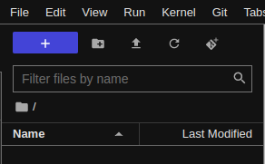

Live coding 3
Live coding 3
This is a blog based on Jeremy Howard’s Youtube video on Live coding 3. Here, we will learn about $PATH, how conda/mamba works, how to setup pip and git in Paperspace.
$PATH
What happens when we type a command in the shell? How does it know if any command exists?
In a shell, there is an environment variable called $PATH. This is where our shell looks for a command. To take a close look at it, type echo $PATH.
echo $PATHThis is a string seperated by a colon (:). Pay attention to the first one. This is where mambaforge comes in. Anything related to python that we will use will come from this directory. Try typing which python or which jupyter.
Feel free to check out what’s in ~/mambaforge/bin with ls command.
which pythonIt’s interesting to see that mambaforge has a bin directory that contains binary files or executables, like an operating system. In fact, it is very similar to Unix system. Take a look:
In Unix system, / refers to a root of a file system. This is where everything is stored.
New environment on conda/mamba
Let’s try creating a new environment with mamba. This way, we can try different versions of python. To create a new environment called tmp with python version less than 3.10, we type mamba create -n tmp 'python<3.10' fastcore. We are also downloading fastcore in here.
It’s easier to manage projects when everything is simple. Having multiple environments can cause many problems. Create environments with caution.
After it’s done, activate it with mamba activate tmp. We can see that our environment is changed from (base) to (tmp) in the beginning of our prompt. Now, python’s path is changed. mambaforge/envs/ is where environments are stored, and inside of the tmp environment, we have another Unix system here!
To go back to our (base) environment, we can type conda activate.
Paperspace
New notebook (instance)
Paperspace is a great environment where we can work on use GPU for free. There are other free options as well, such as Kaggle or Google colab. However, in paperspace, we have a storage where we can save our packages, such as ctags. Paperspace instance also lasts up to 6 hours. There is more freedom involved with this one.
On the other hand, it can be very tricky and confusing to setup for those who are not very familiar with using a command line. It is also a great opportunity to learn about different skills, such as creating bash scripts and symbolic links.
First thing we will do is to create a notebook at paperspace. After signing in and creating a project, we can create a notebook. Here, we are actually creating an instance or a server. Let’s go ahead and create one. On the project screen, you will see the Create button on the top right corner.
Now, we choose a template. We will be using fastai, so we choos that one.
Next, we choose a hardware for a machine. There are many options, but we can choose CPU for now. We can always switch to GPU later if we need to.
We choose 6 hours, but we can also choose less than this.
If you are not using the instance, please shut it down so that other people can access it, instead of letting it sit there until the timer is maxed out. It not only saves energy and the earth, but also helps paperspace cost down.
Lastly, we turn the advanced option on and remove Workspace URL. This Workspace URL is a URL for a git that will be installed on this instance. By default, it will install fastbook, but it is easier to setup our machine without anything in it. Then, click START NOTEBOOK.
This is paperspace GUI. We can start working in this environment if we wanted to. Let’s see what we have here.
One important button is Stop Machine. When we are done, make sure to click this button.
Another good thing about paperspace is that we have an option to start working in Jupyterlab. This is great because we are familiar with this environment. On the left panel, the last orange button is the Jupyterlab button. Click it.
Persistent pip
On paperspace instance, everything is wiped out upon closing the instance, except for some special directories. those directories are /storage/ and /notebooks/. As long as we save our files in here, we can access them later. However, there’s a difference between those two. /storage/ is shared among all the instances, but /notebooks/ is unique to this instance. Let’s install a package using pip and make the package consistent.
First thing we have to do is open up a terminal. It’s the first option on the bottom.
We will install flask as an example. You can install whatever you want. It just has to be something that’s not installed yet. So, it cannot be fastai.
Here are the steps:
pip install --user flask: This installs flask in~/.local/binbecause of--userflag. It’s necessary that we install packages in this place. Then, open up python and import flask. It should not raise any error. Exit out of python.cd: Change directory to home directory.ls -al: List all the files here. We can see that we have.localdirectory in here. Take a look inside of this directory and find out what’s in here.cd /storage: This is the space allocated to us to keep files persistent.mkdir cfg: Create a cfg (config) directory in here. We will place all configuration things in here.cd: Go back to home directory.mv .local /storage/cfg/: Move.localto our config directory in our persistent storage. If we try to import flask now, python raises error because it doesn’t exist.ln -s /storage/cfg/.local: Create a symbolic link from/storage/cfg/.localto here (home directory). This link allows us to use.localas if it’s in this directory.ls -al: If we look at.local, it looks something like.local -> /storage/cfg/.local/. Try to go into this directory or list stuff in here.- Now, import flask, and it works.
!$
When we move a file or directory somewhere like mv .local /storage/cfg/, and we want to check what’s in /storage/cfg/ right after, we can do ls !$. !$ refers to the last parameter from the previous command. So, ls !$ expands into ls /storage/cfg/. More tips and features can be found here
Now, if we restart the instance, we will have .local in our storage. However, there is a problem. We won’t have the symbolic links next time. So we have to create a bash script that can help us with this problem.
Head over to /storage, and type vim pre-run.sh. This will open up vim, which is a text editor. We can press i to start typing and press Escape to stop typing. We can use arrow keys to move around. After pressing Escape, we are in command mode, so we can save the file and exit. This is the file I’ve written. Let’s go over what each line does.
pre-run.shFor those who have never used vim before, it can be confusing. However, vim is very powerful as we will learn more about its capabilities later on.
#!/usr/bin/env bash means this file is a bash script. Commands in this file are just all the commands we’ve been typing on the shell, such as cd, rm, and more. Lines starting with # are comments, which means these lines are not commands. We can write notes to ourselves so that we can easily understand what’s going on. pushd ~ saves the current location so that we can go back here. You can try this command out. Use this command in current directory, go to somewhere else, and do popd. We are back. Next three lines are pretty straight forward. Move to home directory, delete .local directory, and create a symlink.
To save this file, press Escape and press :wq. Now, the file is saved. :wq means write and quit. Now, we have to make this file executable. We can do it with chmod 744 pre-run.sh. Find out what chmod (change mode) does here by using man command or by searching online. To try out the script, we type ./pre-run.sh.
When paperspace instance starts, /run.sh is run, which contains a line to execute /storage/pre-run.sh if it exists. Check out /run.sh and find out what it does.
Persistent git using ssh
Next thing we want to setup on our paperspace is ssh. As we have seen from the previous article, we can use git to commit with ssh.
We can either create a new key pair, or use the one we created from last time. Using a new key pair requires adding the public key into the GitHub, but using the old one can be used right away. However, using a new key can be safer in case someone else takes a control of our machine.
I will just use my previous key because I don’t like storing many keys on GitHub.
Let’s get it started. Let’s follow these steps and execute the commands.
ssh-keygen: Create.ssh/directory in home directory that contains key pairs. If you want to use generated keys, jump to step 8 after adding the key to GitHub.- Upload github keys if you want to use the old keys. Upload button will be located in the centered button on the left panel. After uploading, the keys are located in
/notebooks/.

cd ~/.ssh: This is where generated keys are stored.ls -al: Let’s take a look at the keys.rm id_*: Remove the files starting withid_.mv /notebooks/id_* .: Move keys to here.- Do
chmod 600 id_rsa,chmod 700 ~/.ssh, andchmod 644 id_rsa.pub: These commands change the permissions on the files and its directory. ssh git@github.com: Try using ssh with github.cd: Move to home directorymv .ssh /storage/cfg: Move.sshinto the storage.ln -s /storage/cfg/.ssh: Create a symlink.- Try ssh again.
So, we can connect to GitHub using ssh. But, it won’t work after we restart our instance. So, we have to edit /storage/pre-run.sh like the following. We just have to add those two lines at the end of the image into the file. The rest remains the same.
pre-run.sh after adding sshThat’t it. Try reopening your instance. It should work!
Conclusion
In this article, we covered $PATH, conda/mamba, and setting up paperspace. Setting up paperspace is tricky, and it is easy to get lost in the middle. Do not rush and take your time. If you messed up pre-run.sh script, and an instance cannot start, try to create a new instance with something other than fastai template and modify the pre-run.sh script that way. pre-run.sh is run only in fastai template.
If your instance works as intended, try to do it from scratch by changing pre-run.sh to pre-run.sh.old and creating a new instance. It will be a good practice.